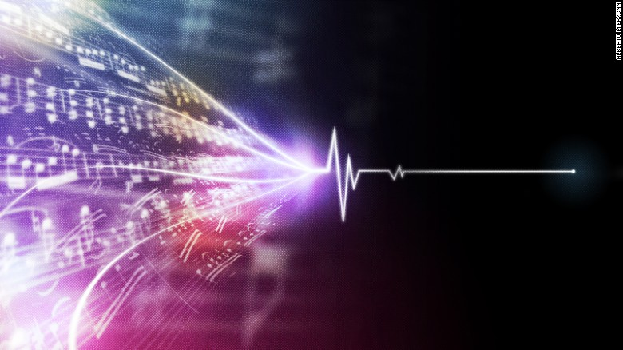
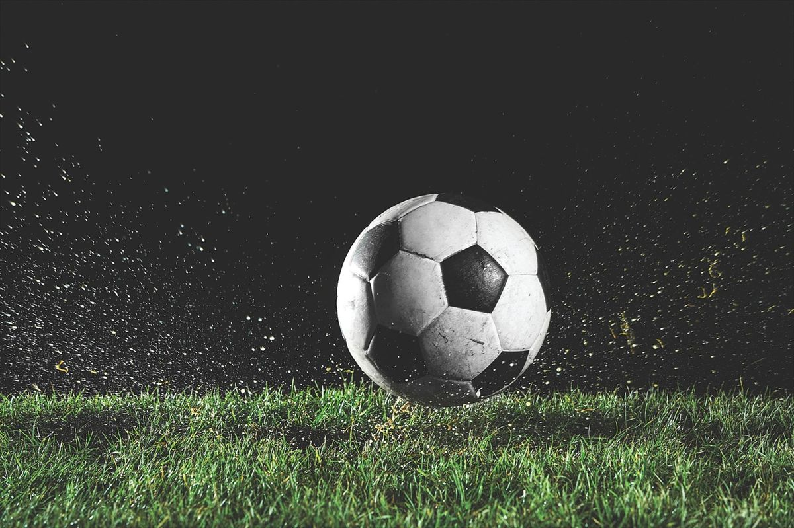
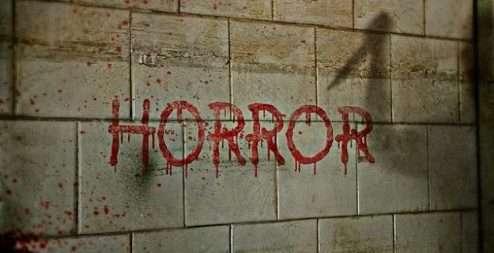

Working Out
Working Out
I love playing video games. Ever since I could remember I have always enjoyed playing video games. From the N64 to SNES and more currently the PS4, the passion has never gone away. To me games represent a way to explore new worlds from the comfort of your own world. There are no limits when it comes to video games, you can be whoever you want and go anywhere.
 Playing Instruments
Playing Instruments
When I was in middle school i learned to play the trumpet. I was in the middle school's band program. Late on in life I learned to play classic guitar. I played in two high school concerts and went to Disney as our guitar class field trip. I think everyone should try to learn to play one instrument in their lifetime, it is really fun and rewarding.
Graphic DesignIt was only until I started my college career that I realized that I loved graphic design. I never thought in my wildest dreams that people could get paid for designing content. It truly is a fun career and I am so glad I found it. I am the type of person who wants to have fun everyday while getting paid, I cannot imagine another career like this.
SportsAt a very early age I was introduced to the world of sports. From football to basketball to the american football, I liked watching or playing all of those different sports. I have been to basketball games and football games. I love watching the world cup and the nba finals, and the olympics as well. I love watching sports as well as playing them.
ComicsI am all for peace and unity, but in my humble opinion Marvel comics are just the greatest of all time. I love DC comics as well but they are not my favorite. Comics are similar to video games, they can transport you different worlds, it is amazing. My top three comic book characters are Wolverine, the Punisher, and the Hulk. I also love watching marvel and dc movies.
MusicMy favorite music genre is Rap/Hip-Hop. My all-time favorite artist is Detroit rapper Eminem. Some of my other favorite artists include Kendrick Lamar, J. Cole, Snoop Dogg, 2Pac, Biggie, Dr. Dre, Jay-Z, and a few more. But I also love other genres such as rock and roll, classic rock, metal. Some of the other artists that I like are Metallica, Johnny Cash, System Of A Down, Guns N Roses, and much more. Music is an extremely important factor in my life.
 DogsI love animals. But my favorite animal ever is the dog. I do not care what anyone says, cats will never be better than dogs. Dogs are beyond amazing, they can be sweet, suportive, they can defend you from danger, there are so many benefits to owning a dog. Dogs are truly man's best friend. My favorite dog breed is Golden Retriever. I hope to own a dog in the future.
Working Out
Doing exercise is one of my favorite things to do. I love doing cardio as well as lifting some weights. I wish I had more drive and motivation to go to the gym or just get more exercise. Not only does working out make you look good but it helps your health tremendously. We should all look to make daily exercise. Doing exercise is more important now since there is so much technology around us.
Playing Football (NOT AMERICAN FOOTBALL)Although I like all types of sports there is only one sport I LOVE, which is football. Many people call football "soccer" but in reality american football is not even played with their foot. Anyways, football is the most popular sport in the world, I always look forward the world cup which is the biggest sport event in the world. It is extremely fun to play and anyone can play it. Football is truly the best sport in the world.  Horror Genre
I love watching horror movies. My favorite horror icons are Jason, Freddy, and Leatherface. I love watching shows and movies that make me jump. I also love reading scary stories and reading about ghosts and serial killers. Some people hate the horror genre but I love it. Last year I went to Halloween Horror Nights in Orlando it was extremely fun and scary. 